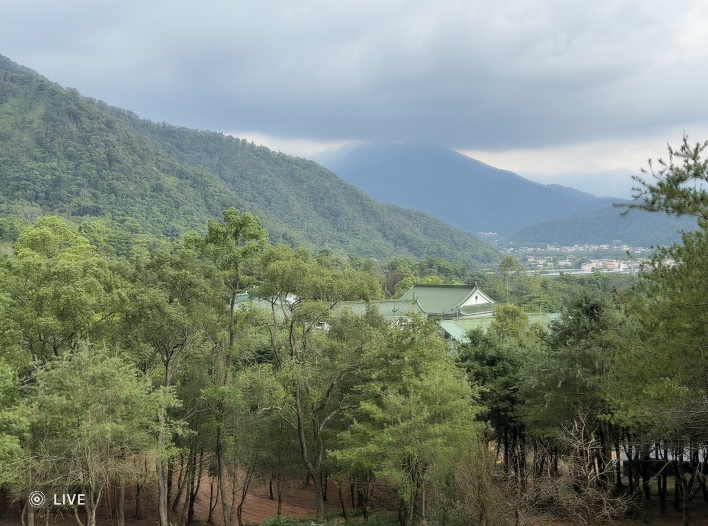
土地故事The land's story
這片土地的故事，要從已故的黃炳松老先生說起。他一生愛惜鄉土，當年寧願購入這片林地親手種樹養林，也不選擇增值潛力更高的建地。前後三、四十年歲月，他始終不灑一滴農藥、不輕易砍一棵樹，只為讓土地回到最原始的樣貌。正因為這份堅持，才留下今天這片樹齡數十年、完全無農藥的原始森林——走進林間，你會聞到落葉與腐植土的氣味，聽見蟲鳴鳥叫此起彼落，那是四十年沒有被打擾過的土地，才養得出來的靈氣。水松千樹之森，就是在他所守護的這片土地上，由家族繼續用心經營下去。 The story of this land begins with the late Mr. Huang Bing-song. He loved this soil enough to buy raw forest land and tend it by hand, rather than choose ground with higher development value. For thirty to forty years, he never sprayed a drop of pesticide and never felled a tree without cause, wanting only for the land to return to its most original state. That discipline is why this forest still stands today, decades old and entirely untouched by chemicals — walk beneath the canopy and you'll smell fallen leaves and rich humus, hear insects and birds calling back and forth. It's a kind of spirit only land left undisturbed for forty years can grow. Shuisong Thousand-Tree Forest is this land, still cared for by the family who has always watched over it.
「四十年不灑一滴農藥、不輕易砍一棵樹」——這片森林的靈氣，是時間換來的。 "Forty years without a single drop of pesticide, without a tree felled without cause" — this forest's spirit was earned, one season at a time.
森林住民Forest residents
四十年沒有農藥、沒有過度開發的森林，養出了豐富又安靜的生態。以下幾張都是營區周邊實拍的畫面。 Forty years without pesticide or heavy development has let a quiet, rich ecosystem take root. These photos were all taken right around the campground.
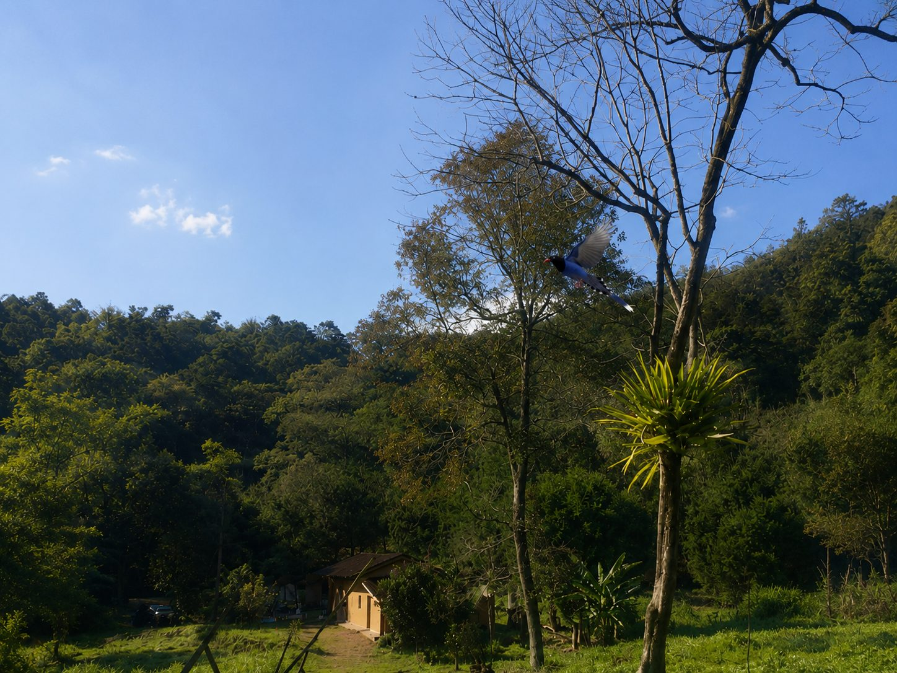
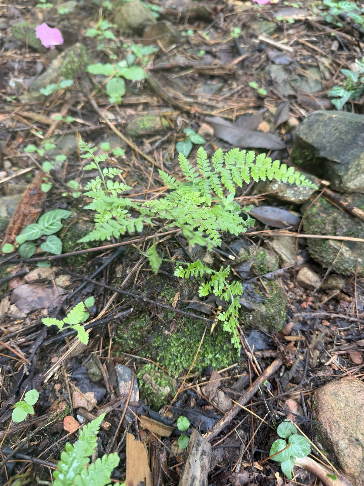
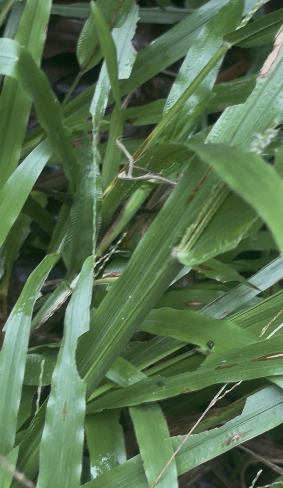
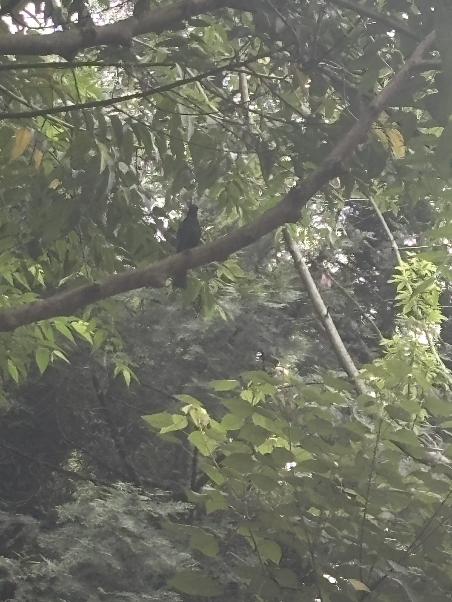
設施重點Facilities
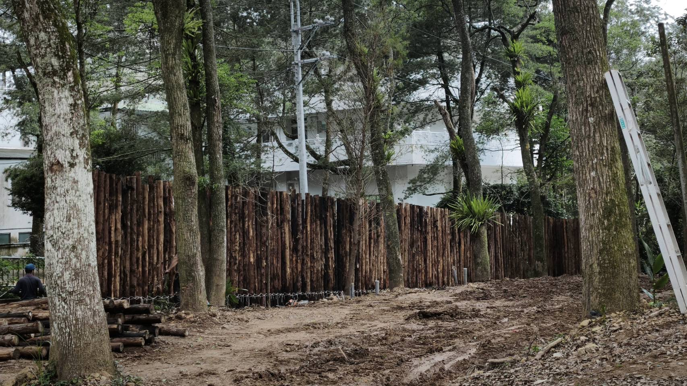
乾濕分離、定時清潔，露營也能維持舒適的衛浴品質。 Dry and wet areas separated, cleaned on a fixed schedule — comfort doesn't stop at the tent flap.
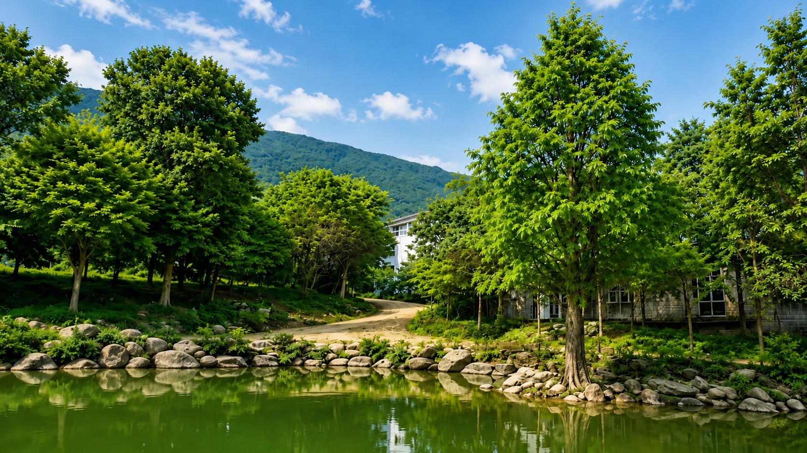
全區供電穩定，帳篷、行動裝置都能安心充電。 Stable power across the grounds, so your gear and devices stay charged.
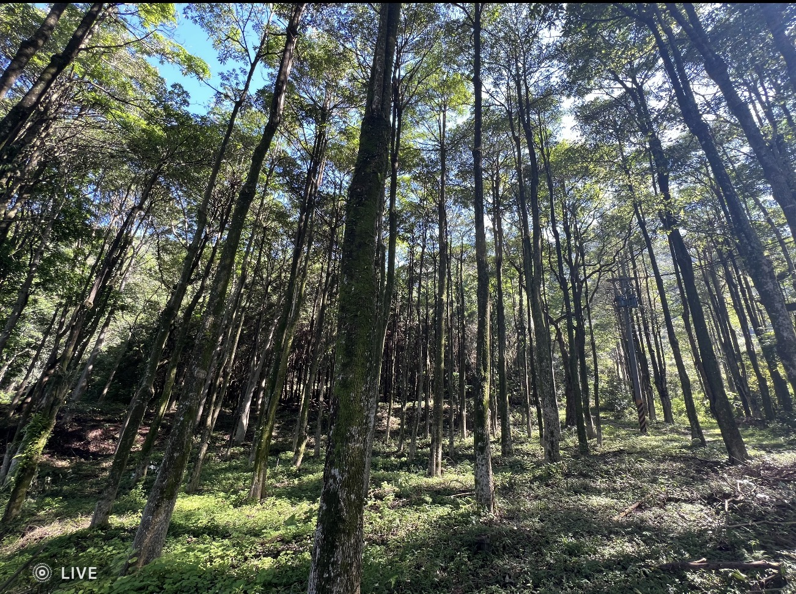
森林間可見多樣原生植物與野生動物蹤跡，安靜觀察也是一種享受。 Native plants and wildlife throughout the forest — quiet observation is its own kind of reward.
建設進度Construction progress
從整地、鋪設營位平台到管理室建置，我們一步步把這片林地準備好，也樂於讓你看見過程中的每一步。 From clearing the ground to laying platform decking and building the site office, we're preparing this land step by step — and happy to show you every stage of it.
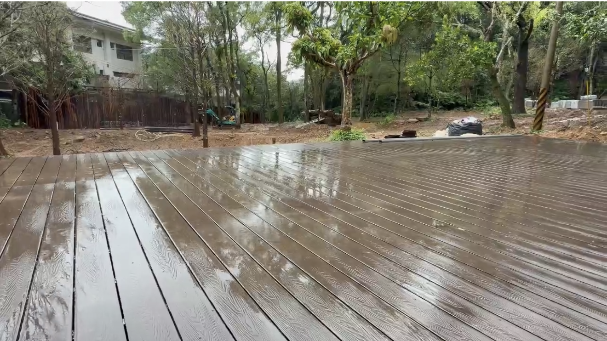
木棧平台逐步完成，讓紮營更平整穩固。 Wooden platforms going in stage by stage, for flatter and more stable pitches.
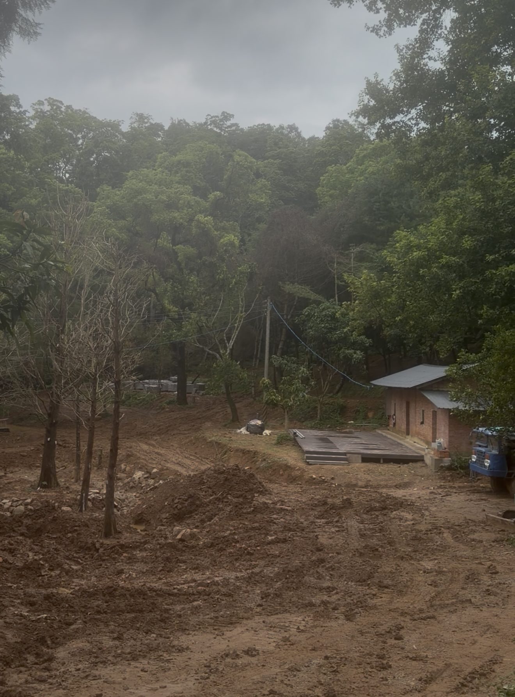
提供未來現場服務與物資支援的基地。 A future base for on-site service and supplies.
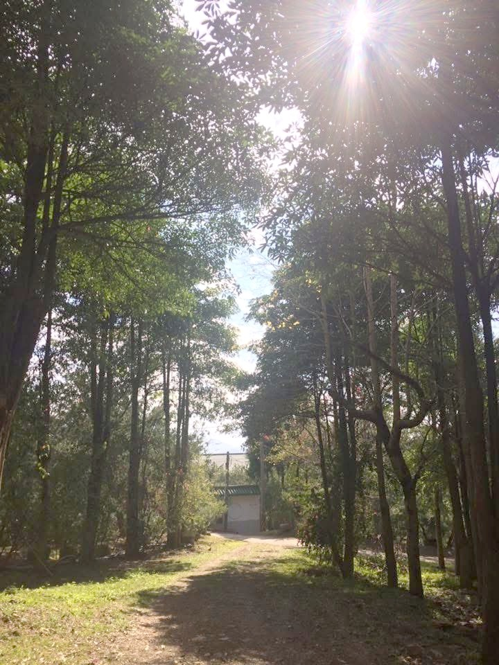
穿過林蔭步道，就是森林裡的第一口深呼吸。 Walk the shaded trail in, and take your first deep breath of the forest.
營位規劃Site layout
營位分散於林間各處，保有隱私與空間感，不會有帳篷緊貼帳篷的壓迫感。實際位置將於預約確認後與您說明。 Campsites are spread throughout the forest for privacy and breathing room — no tent-to-tent crowding. Exact placement is confirmed once your booking is set.
查看預約日曆View booking calendar